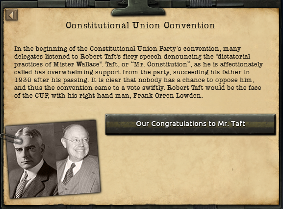
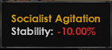

Progress Report 2: The United States
The United States: An Ailing Giant
Hello everyone and welcome to the second Progress Report for Aftershocks of the Revolution! I'm Nicol, lead dev for America, and Flizzy and I are excited to show off some of the content that we have planned for America!
USA History
The presidential election in 1844 was a critical one for American history. With the looming crisis over the recently independent Republic of Texas (and the fight between free and slave states should it be annexed), the Whig and Democratic parties would have to choose their positions on this matter. Henry Clay, a staunch anti-expansionist, opposed the annexation of Texas. The Democratic party, however, was in favor of annexing Texas and even expanding further into currently-Mexican lands. Martin Van Buren, the former President, was the leading candidate, but his views on Texas were vague at best. Wisely, Van Buren decided to support the annexation, but only if the American people would back it. As a result, John Tyler refused to pull out of the race, splitting the Democratic vote and giving Henry Clay the White House.
One of the first things Clay was faced with was the territorial dispute of Oregon. Clay sought to resolve this issue amicably with the British, splitting the Oregon County along the 49th Parallel, with the exception of Vancouver Island, which was awarded to the US. Later, in a historic miscalculation, Mexico attempted to invade Texas, misreading Clay's presidency as free reign to retake the rebels. American support for Texas swelled, and the Democrats seized on the opportunity to expand out West, with a particular focus on California, which was already of interest to the Americans and British. Clay, despite his reservations, intervened, and in the Treaty of Guadalupe-Hidalgo, Texas secured almost all of its territorial claims, America obtained all of the Californias, and both America and Mexico promised to recognize and respect Texan sovereignty and independence. In the debates over how America's new territories should be organized (and the subtext of what would be free states and what would be slave states), Clay pushed forward with a compromise, dividing California along the 36.30 parallel. Clay, a supporter of the American Colonization Society, pushed for the creation of an American protectorate in Africa, taking the first step in American imperialism.
The next major election in American history was the 1860 election. The debate over slavery was becoming more and more violent, with Kansas having descended into outright violence in 1856. The Republicans, a new, anti-slavery party, had numerous contenders for their nomination, but ultimately William Seward, the early favorite, managed to consolidate his support and win. The election itself was bitter, but in the end, Seward won. Fearing that a Seward presidency would lead to slavery being forcefully abolished, the Southern states and South California seceded from the United States, setting the stage for the Civil War. Perhaps unsurprisingly, Texas voted to join the Confederacy, as the two shared many cultural similarities. Seward quickly cracked down on dissent in what remained in America, outlawing the Democratic party in its entirety as a seditious organization and immediately eliminating slavery in the United States. Former Democratic politicians turned to one of the new parties formed during the election, the Constitutional Union Party. Many states were divided by the conflict- in particular, politicians in Tennessee and Virginia tried to secede from their states and rejoin the Union. As a result, the states of East Tennessee and West Virginia were formed. Ultimately, Seward and the Union prevailed, re-occupying the secessionist states- and Texas. American politicians argued that Texas had revoked its own independence by joining the Confederacy, meaning the section of the Treaty of Guadalupe-Hidalgo that preserved Texan independence had been voided. Texas itself was also divided, with the northern counties forming the new state of Jefferson. Southern California was also divided along the old Mexican borders, with Baja California becoming the state of Seward.
Following the Civil War, America began rising in prominence as a new global power. The Grant administration during Reconstruction annexed the country of Santo Domingo, beginning the American presence in the Caribbean. This presence was further expanded when America intervened in the Cuban fight for independence, devastating Spain in the Caribbean and in the Pacific. However, at the peace deal, the USA betrayed the Cubans and annexed the island along with Puerto Rico. The Philippines was granted independence, though it was "persuaded" to lease ports to the American government. American imperialism was in full swing.
Theodore Roosevelt was perhaps the single greatest president in American history. He championed progressive ideals throughout his presidencies, promoting his Square Deal to the American populace and expanding American influence in the Pacific and Central America. He oversaw numerous domestic policies, cracking down on monopolies and corruption and creating numerous national parks and monuments. He is widely credited with beginning the ascendancy of the USA to global economic prominence. His foreign policy was also a major part of his presidency- during his first two terms, he intervened in the Panama Crisis and oversaw the beginning of work on the Canal, as well as decisively defeating Cuban separatists in the protracted guerilla war against American rule. After Howard Taft's more conservative policies alienated Roosevelt, he split off from the Republican Party and founded the Progressive Party. In a complete shock to the status quo, Roosevelt won, upending the two party system between the Republicans and Constitutional Unionists that had existed since Reconstruction. In his third and fourth terms, Roosevelt finished the Panama Canal, intervened in the Mexican Civil War, and most controversially, kept the United States neutral in the Great War. Roosevelt personally was in support of intervention in favor of France, but the American public was emphatically isolationist and Roosevelt knew he wouldn't be able to pursue a war without the support of the American public. In terms of domestic policy, Roosevelt's administration gave women the vote, oversaw the passage of the Seventeenth Amendment, and strict limits on the actions of large corporations and businesses. Roosevelt also granted Liberia its independence following a popular referendum in 1916, creating the first post-colonial nation in Africa. After a health scare in the later months of 1918, Roosevelt passed away in his sleep in 1919, bringing an end to his record 4 terms. His presidencies caused a huge paradigm shift in American politics- progressive Republicans and Constitutional Unionists flocked to the new party, shifting American politics to the left and destabilizing the status quo.
America stood untouched by the devastation of the Great War, flourishing economically in what became known as the Roaring '20s. However, the Socialist Party of America, once a small party restricted to local elections, began a meteoric rise to prominence as many Americans felt that the Progressive Party, whose president after Roosevelt, Leonard Wood, failed to capture the same support as Teddy, wasn't doing enough to support the working class. The Socialist Party's first splash came in 1924, where the divided ticket between the Progressive McAdoo, Republican Coolidge, Constitutional Unionist Davis, and now the Socialist Follette let the Republican candidate take the election. Coolidge quickly undid many of Roosevelt's anti-business policies, letting corporations and the economy flourish. Many thought this prosperity would never end...until it did.
The Economic Crash of 1929 was devastating. Millions of dollars evaporated overnight, and unemployment skyrocketed to previously unseen levels. Coolidge, having won reelection the year prior, did nothing, believing the market would sort itself out soon enough. His staunch refusal to intervene led to the Depression becoming almost a fact of life, with "Coolidgevilles" springing up across the country. The Socialist Party could not have benefited more from the economic situation, as millions of disenfranchised workers suddenly became receptive to the party's revolutionary zeal. The election of 1932 was the most divisive since 1860, with many fearing that the country would once again come to blows. Ultimately, Henry Wallace managed to secure the White House, promising to address the concerns of the unemployed and working class with a Second Square Deal and deliver a quick end to the economic crash.
By 1936, the Wallace White House has failed to deliver on their promises. The Second Square Deal, plagued by idealism and inefficiency, only addressed the effects of the Stock Collapse, not its underlying causes. Unemployment has remained high, businesses have remained closed, and many foreign investors have turned their backs on the United States in favor of the German Empire. The Socialist Party has grown even bolder, with many protests, rallies, and strikes turning violent. Many fear that, should the next president prove unable to deal with the issues at hand, the United States as we know it might end forever...
The Nomination Process
The first couple of events for the United States come in the form of the Nomination Conventions for the four major parties, the Republicans, Progressives, Constitutional Unionists, and Socialists. These events dictate who will run in the general election for the four major parties. The first of these events comes on the 2nd of February, with the Republican Convention:
Here the player can choose either Alf Landon or Herbert Hoover as the Republican nominee. Alf Landon is the more business-friendly of the two, advocating for the lifting of some of the worker's reforms put into place by the Progressives and encouraging American businesses. Hoover, on the other hand, has drafted an entirely new plan to deal with the economic depression, which he calls the New Deal, focusing on revitalized government intervention in both businesses and unemployment, starting massive public works projects and working with business leaders to help revive the economy.
The next event comes in the form of the Progressive Convention, held on March 5th:
Here the player is presented with the choice of a Progressive Party nominee, being able to choose between William Borah and Franklin Delano Roosevelt, with Al Smith as vice president for both. Borah supports revisions to the Second Square Deal to tackle the economic problems of the day while retaining strong support for worker's rights to "defend against socialism", while Roosevelt, representing the entrenched political leaders of the party, has been opposed to any reforms of the Deal, and prefers a continuation of the deal as is.
The two convention events after this point are more simple, with the nominee already being decided. For the Constitutional Union Convention, held in late March, the nominee ends up being Robert Taft. Taft is known as a staunch constitutionalist, denouncing the practices of the current president Henry Wallace as a vast overextension of the government's power. Taft's pick for vice president ends up being Frank Orren Lowden.
And finally, The Socialist Convention, held in early April, ends with the nomination of Robert Follette, with the largely overlooked Floyd Olson as his vice president.
Socialist Agitation
The Socialist Agitation idea has 3 levels, with varying stability penalties for each, representing either elevated or lower levels of socialist tension across the states.
The highest penalty idea gives a debuff of -15% Stability, to represent the high volume of Socialist protests and general Agitation.
The Medium idea gives a slightly lower debuff of only -10% Stability, representing a medium volume of protests and agitation.
The lowest possible penalty is a debuff of -5% stability, to represent the lower volume of Socialist protests and agitation.
As you choose how to address the threat the socialists pose to the nation, agitation will rise and fall accordingly. For example, choosing to "Crush the Socialists" will lower their influence.
Focus Tree
Once the presidential candidates are chosen, the focus tree for 1936 unlocks. You'll have until the election to complete the focuses- once the election happens you won't be able to take the focuses and they'll be bypassed.
War Plan White
The War Plan White focus begins an event chain detailing Douglas MacArthur's idea to revive and renovate "War Plan White", a military plan for dealing with domestic revolt drafted under the Coolidge administration. With the socialists growing bolder by the day and organizations such as the Texas National Party, helmed by the firebrand John Nance Garner, clamoring for secession, it will be vital for the United States Armed Forces to be able to secure the nation. However, with the intervention in Canada ongoing, resources are limited, meaning you'll have to choose between reinforcing the western states or undermining Socialist control of the Rust Belt.
Each state has their own military force. They are usually small, though some states have surprisingly large defense forces. According to the Constitution, the federal government cannot nationalize these militias, but by passing a law requiring that all state militias also register for the National Guard, MacArthur can circumvent this. Alternatively, more resources can be allocated towards the Army itself.
Finally, the matter of the Capitol must be addressed. Though no one in the White House wants to think about it, it is possible that the White House could fall into the hands of rebels. Should the unthinkable occur, preemptive plans for an evacuation would be invaluable. The top candidates are Victoria, capital of the eponymous island state off of Washington, or Havana, capital of Cuba. Victoria would be safe and secure, but the journey there, which would pass through rebel-held territory, would be dangerous. Havana is closer and easier to travel to thanks to our Navy's hold over the Caribbean, but the local Cubans would be less than receptive to our government. Of course, an evacuation plan could be discarded entirely. After all, there's no way any rebels could take DC, right?
The Emergency Economic Relief Act
The Emergency Economic Relief Act is the Wallace administration's final attempt to address the economy, trying to deal with rampant deflation. Despite the good intentions of the act, it faces staunch opposition, ranging from gold-bugs who refuse to support taking America off of the metal to those who see it as a power play by the Progressives to try and increase their chances in the election. You can choose between passing it as an executive order, and trying to push the entire package or a smaller, more agreeable bill through Congress.
Should you choose to try to go through Congress, the Emergency Economic Relief Bill mission begins. You'll have the option to increase the chances of the bill passing by working with one of the other major parties at the cost of increasing the popularity of the ideology of that party.
The Judicial Procedures Reform Act

One of the greatest accomplishments the Progressive establishment bestows upon itself is keeping Socialist radicalism at bay by supporting the American working class via democracy. With the election approaching, the harsh truth is becoming apparent- the next President will likely not be a Progressive. As both the Republicans and CUP are likely to change the Second Square Deal to be less worker-friendly, a law has been created by Vice President Roosevelt and his aides to fundamentally alter the Supreme Court to include more Progressive judges. However, this Act will never pass without some backdoor dealings with one of the other parties- in exchange for supporting the bill, Wallace will appoint some judges they support. Depending on who you chose to appeal to in the Emergency Economic Relief Act mission, the support of the party you choose will carry over (ie. Rallying the Republicans carries over to the Judicial Act if you work with them).
The Election of 1936
Finally, the day comes for the next President of the United States to be elected. Your actual choices for who can be elected depend on the candidates themselves: For the purposes of this Progress Report (and future ones), we'll assume the candidates are Hoover, Taft, and FDR. As you can see, the baggage of the Wallace administration means that the electoral college won't nominate FDR. However, should the vote be inconclusive and be passed to the House of Representatives...
...It's a different story. With the Socialists cut out of the running and the CUP unable to garner enough votes, FDR has a chance. For the purposes of the PR, we'll say that Wallace is able to make enough promises and concessions to House representatives to get his vice president into the office and continue Theodore Roosevelt's legacy.

Wallace's backroom dealings are quickly leaked to the press, and political opponents from every party decry the Progressive's "Corrupt Bargain" as having sold out democracy. The Socialist Party refuses to recognize the election's results, demanding that both Wallace and FDR resign for their actions and allow Congress to conduct a recount. The nation is quickly descending into chaos, and all eyes are tuned to the television to see Roosevelt's first public statements since his victory was announced- his inauguration. And then, on January 20th, 1937, in the rainy morning...